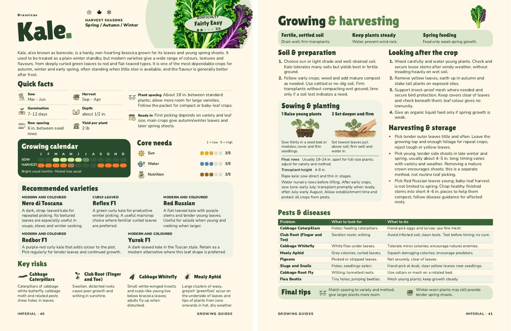
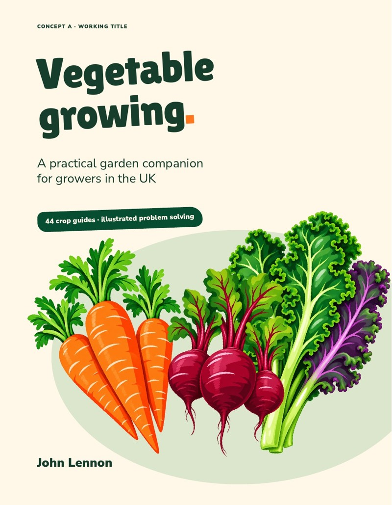
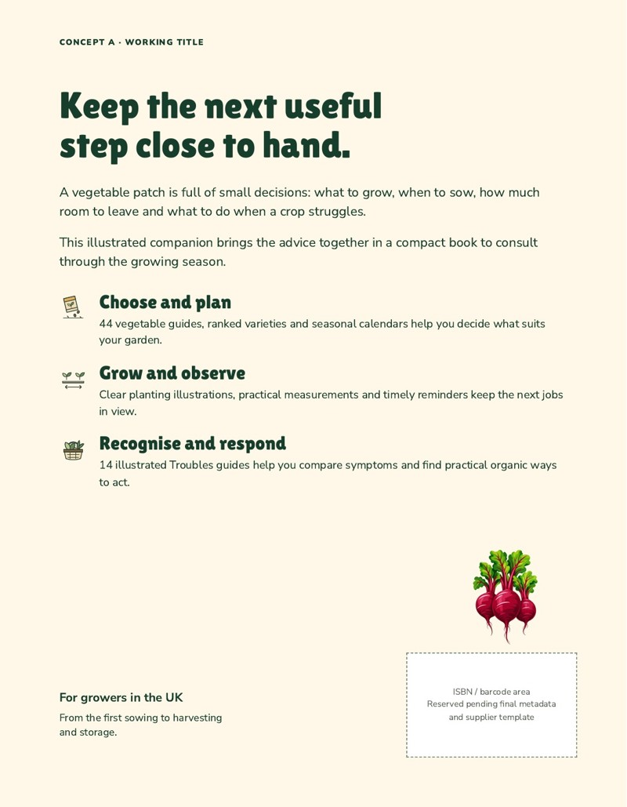
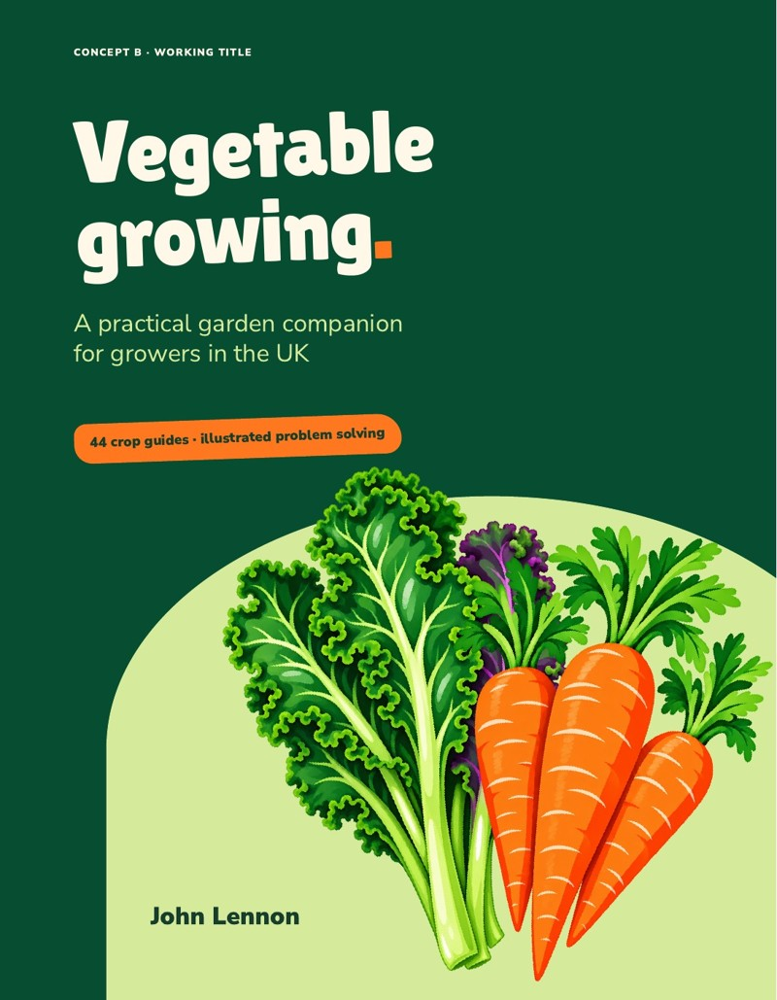
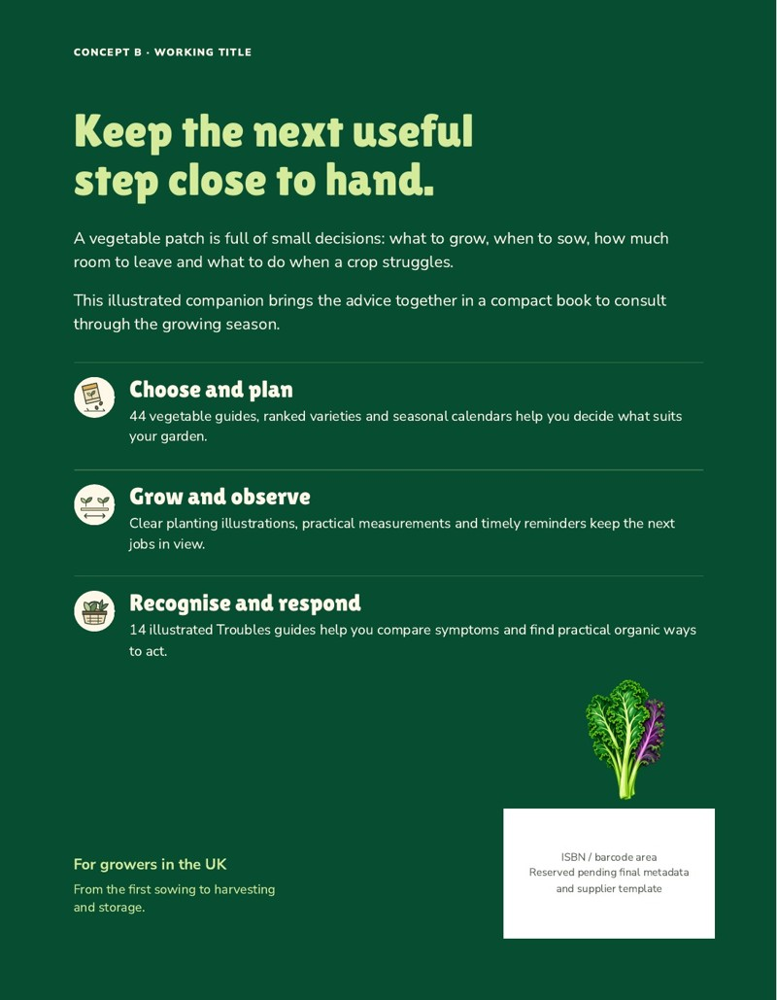

Cover C · retained style reference

Approved A4 original retained. The compact book now uses G2 Cream centre; C1/C2 adaptations were rejected.
The complete collection is now arranged as a compact, conventionally bound book. This pack brings together the interior, opening pages, cover choices and costs for your review.
Ready for your review. Both unit editions and opening drafts are collected here. John has now selected G2 for the front; review the torn-page back-cover ideas. These remain publication drafts: the decisions and final preflight items below must be settled before upload. Nothing has been ordered or published.
Current direction, 7 October: G2 Cream centre is the selected front. Cover C guides colour/illustration style only. Adapt the approved contents and illustrated how-to. All three originals are intact and match their installed approval hashes. The books linked below still contain the overnight opening drafts. John approved the separate compact contents/how-to on 7 October; see Opening pages below.
Approved A4 original retained. The compact book now uses G2 Cream centre; C1/C2 adaptations were rejected.
Carry forward the harvest artwork, coloured contents groups, illustrated calendar keys, difficulty characters and dropper/wave needs scale. Revise the page references and sheet-specific wording for the book.
Contents approved 29 September; how-to approved 30 September, with the approved 1 October difficulty wording. Editable layouts and illustration assets remain in docs/front-matter.
Forty crops have two pages. Carrot, both Tomatoes and Onions/Shallots retain three. Every vegetable opens on a left-hand page so the overview and practical advice face each other. Four unprinted right-hand pages preserve that arrangement; this is a proposal for you to review.

Actual Kale pages 40–41 from the assembled KDP review PDF. Screen previews do not establish printed colour or small-type readability.
Complete interiors with contents and folios, plus the checked artwork-flattening step. The original KDP sources have full visual review; these derivatives have complete physical and raster-difference checks with representative visual inspection.
Approximately 302 MB each. Publication placeholders and final print checks remain.
The same page count and guide text, with a separate 17 mm binding margin and 3 mm all-round bleed. Both books have checked flattened artwork and native vector text.
Approximately 302 MB each. These are local review drafts, not supplier-approved files.
These approximately 566 MB files retain their original artwork and transparency: KDP imperial / metric; Bookvault imperial / metric. The newer derivatives composite artwork at 600 dpi RGB; native text is retained, but graphics are resampled and are not pixel-identical to these originals.
View the approved contents & illustrated how-to
The separate four-page design, approved by John on 7 October, restores the approved harvest artwork, coloured contents groups and illustrated explanations at physical folios 4–7. Both unit editions have current book references and checked PDF proofs. A new three-page title, publication and welcome proposal is also ready in both units, with lipsum orum text as requested. These pages await design review and final copy. The full books have not been reassembled.
The older seven-page pack below remains reference material:
Seven draft pages: title, publication details, a short introduction, two contents pages and two illustrated how-to pages. Title, imprint, copyright and ISBN details are visibly unconfirmed. New copy remains separate from the gardening master data.
The Vegetable Guru / Your at-a-glance growing companion. John selected G2 Cream centre on 7 October. Review B4–B6 torn-page ideas with G2
Historical concepts retained for provenance. Follow the selected G2 direction and current handover.
Both use the existing approved illustration style. These are separate panels: there is no final spine or cover wrap yet. The working title is Vegetable Growing; it needs your decision before any account setup.




Live calculator estimates checked on 6 October for 148 colour pages, 185 × 240 mm, at a £25 list price. Both KDP colour choices accepted this exact custom size in the calculator. Manuscript acceptance is a separate step.
| Sales route | Printing | Displayed author receipt |
|---|---|---|
| KDP standard colour | £4.85 | £10.15 |
| KDP premium colour | £9.70 | £5.30 |
| Bookvault / Great British Bookshop | £5.41 in its retail calculation | £17.09 |
| Bookvault / Amazon | £5.69 | £10.56 |
KDP uses its 60% royalty tier, less printing. Bookvault uses perfect binding, 115 gsm coated paper, matt cover board, toner unchecked, and 35% available sales discount; the Bookshop calculation includes £1.25 distribution and £1.25 retailer deductions. Bookvault setup displays £16.63 excluding local tax. These are estimates, not firm quotes or net profit.
The table retains the historical £25 price basis. The current working cover price is £17.50, shipping separate; see the current price comparison. Customer checkout postage is unverified. Receipts above exclude author tax, advertising and setup recovery; they must not be confused with direct sales that require payment processing, packaging, postage and returns administration. Bookvault direct print estimates are £5.69 for 1–99 copies, £5.52 for 100–249, £5.41 for 250–499 and £5.12 for 500+.
KDP calculator · Bookvault calculator · Saved specifications, costs and qualifications
After those choices, replace the publishing placeholders, regenerate the affected pages and prepare a cover wrap from the chosen supplier’s verified template. Resolve fine icon detail and complete the supplier’s file checks, then use a new unpublished paperback trial for upload and Previewer diagnostics. A physical proof order and publication remain separate decisions.
All 44 crops and 14 Troubles groups are present in both unit editions. The KDP sources have 288 visually reviewed content pages. Both suppliers’ page geometry, embedded fonts, minimum type, image resolution, folios and assembly order have been checked. The Bookvault adaptation has 30 visually inspected source pages and eight assembled sample pages. All eight sampled original assembly raster comparisons for each supplier match their source PDFs. The new flattened derivatives add per-page text, font, colour, geometry, transparency and raster-difference checks across 576 content pages. All 592 physical pages in the four new books pass assembly checks. Visual checks cover 24 representative derivative source pages and 24 assembled samples (16 content pages and eight blanks); all 16 sampled non-blank assembly renders match their flattened inputs. This is not a second full visual review of every derivative page.
The canonical gardening records and all 52 frozen compact reference hashes are unchanged. Working copy and production adaptations are drafts for review.
Transparency has been removed in the four new interior PDFs, with native text retained and all local checks passed. Publishing placeholders, selected-stock colour/PDF requirements and final supplier preflight remain. These files do not claim PDF/X or CMYK compliance. Fine icon strokes remain below KDP’s published 0.75 pt guidance and need resolution before submission; flattening does not change their physical width.
Bookvault’s current cover template labels an 8 mm spine but its filename encodes 8.436 mm. Stock and template geometry must be settled before a full wrap. No new KDP title, upload or Previewer check has been made while title/rights/ISBN decisions are outstanding.
Mushroom’s overview and some third crop pages remain naturally sparse. Larger Troubles gaps remain on Bean/Pea page 3, Onion/Leek page 1 and Turnip/Swede/Radish page 1; sparse final pages can have unequal lower edges. These are recorded design judgements, not missing content.